BigTech (под NDA)
Staff EngineerРазрабатываю LLM-платформу для создания ИИ продуктов внутри компании
Пошаговый практикум для быстрого погружения в gRPC
Подробный практикум, где ты наконец разберёшься, как устроен gRPC, поймёшь все тонкости, напишешь и запустишь свой сервер и клиент, даже если раньше ничего не получалось.
 Забрать практикум в Telegram
Забрать практикум в Telegram
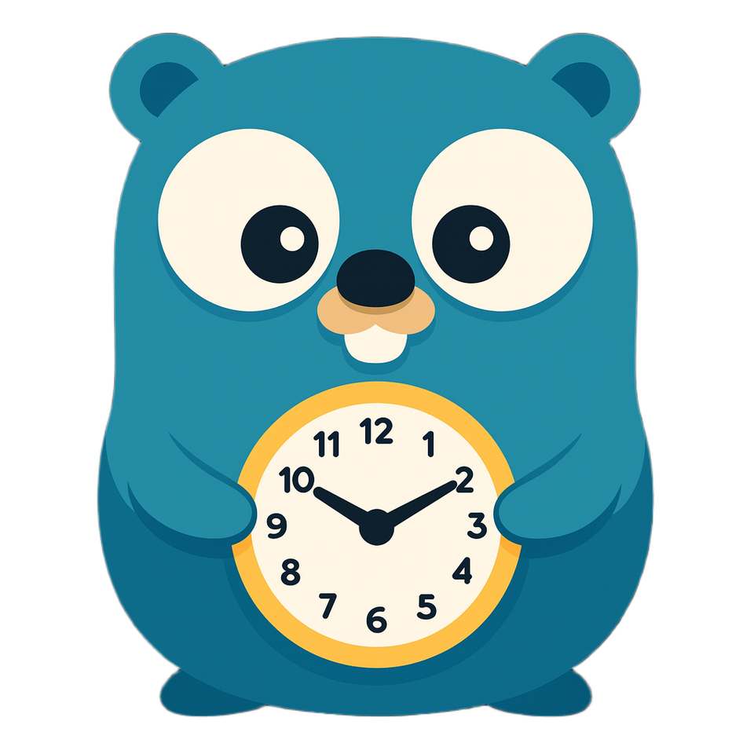


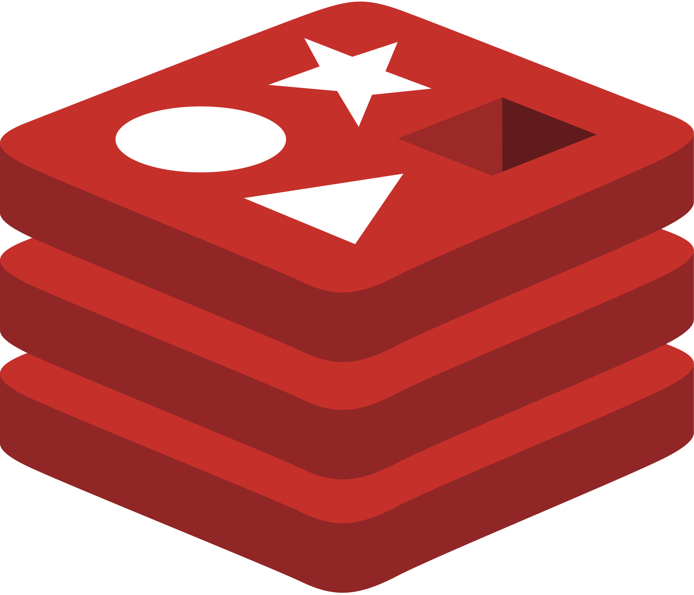
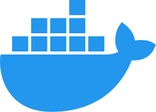

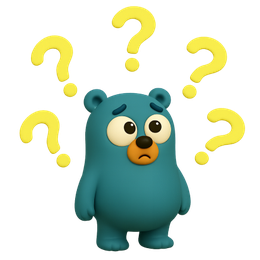
Что такое Protocol Buffer
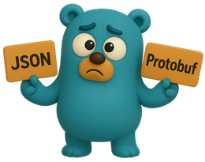
Чем protobuf лучше json
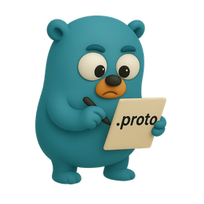
Пишем первый .proto файл
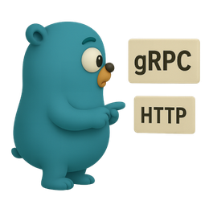
Что такое gRPC и чем он лучше HTTP
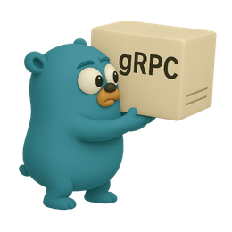
Генерируем и поднимаем gRPC-сервер
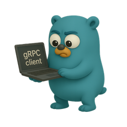
Пишем свой gRPC-клиент
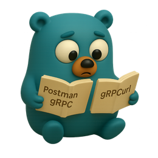
Учимся работать с gRPC через Postman и gRPCurl
Разбираем типичные вопросы с собесов по gRPC
И это всё бесплатно, поэтому чего ты ждёшь, забирай урок скорее
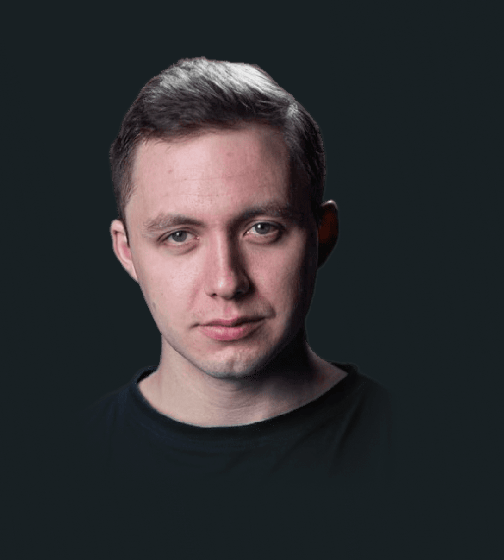
BigTech (под NDA)
Staff EngineerРазрабатываю LLM-платформу для создания ИИ продуктов внутри компании
BigTech (под NDA)
Senior EngineerРазрабатывал внутреннюю платформу для сотен сервисов корпорации
Ozon Tech
Senior EngineerРазрабатывал сервисы логистики, модерации контента и мониторинга доставки
Route 256
Ex-преподаватель и тьюторМенторил и преподавал курсы по построению микросервисов в школе Ozon Tech
>7 000 часов
Практики на реальных проектах в Big Tech компаниях
7+ лет
Занимаюсь программированием
8 500+
Подписчиков на YouTube-канале
Ссылка на практикум будет активна ещё:
00:00:00:00
Забрать практикум в Telegram